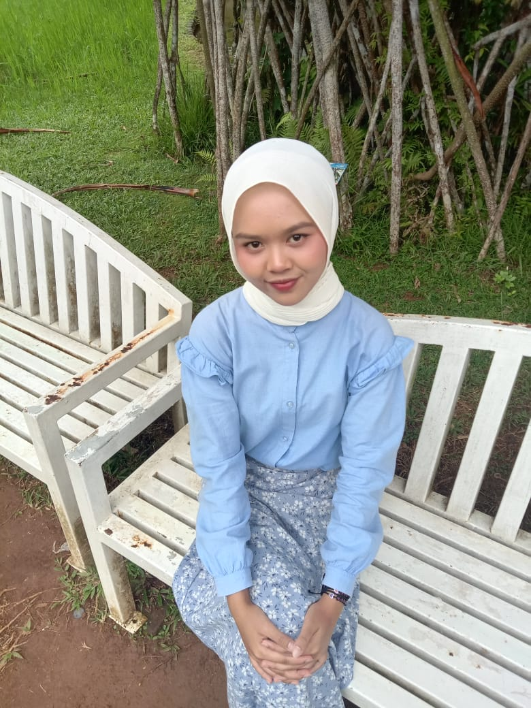
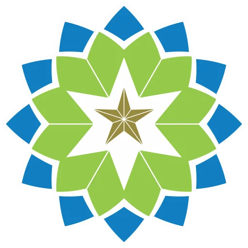
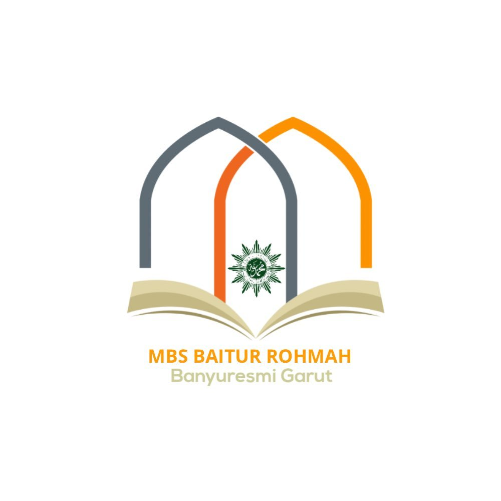

AI / ML
EmpathAI
Mental health chatbot with context-aware system prompt, built with React, Express, FastAPI, TensorFlow, and Gemini API.
View ProjectHi, I'm
AI Engineer & Informatics Engineering
Building intelligent systems with purpose — because technology should make life better, not just easier.

"Small steps,
big dreams."
I'm Yulqi, a 20-year-old Computer Informatics Engineering student with a deep interest in building intelligent systems, especially in AI/ML, and real-world problem solving. I'm passionate about learning, creating, and growing — both in tech and in life.
More About MeInformatics Engineering Student
UIN Sunan Gunung Djati Bandung
AI Engineer
Focus on AI/ML/DL & LLMs
Based in
Bandung, Indonesia
INTJ • Taurus
Dreamer, overthinker, problem solver

Informatics Engineering

Science
Berikut adalah rincian mata kuliah yang sedang saya tempuh pada semester ganjil tahun ajaran berjalan di Program Studi Teknik Informatika, UIN Sunan Gunung Djati Bandung:
| No. | Nama Mata Kuliah | SKS | Jadwal Kuliah | Dosen Pengampu | |
|---|---|---|---|---|---|
| 1 | Manajemen Basis Data | 3 | Senin, 12:40 – 13:10 WIB | Wildan Budiawan Zulfikar, S.T., M.Kom. | |
| 2 | Manajemen Proyek Perangkat Lunak | 3 | Senin, 15:30 – 18:00 WIB | Agung Wahana, S.E., M.T. | |
| 3 | ICT dan Islam | 2 | Selasa, 07:00 – 08:40 WIB | Maulana Hasan M, M.Kom. | |
| 4 | Kewirausahaan & Etika Bisnis | 2 | Selasa, 10:20 – 12:00 WIB | Adam Faroqi, S.T., M.T. | |
| 5 | Pengembangan Aplikasi Mobile | 3 | Selasa, 15:30 – 18:00 WIB | H.Aldy Rialdy Atmaja, M.T. | |
| 6 | Jaringan Komputer | 3 | Rabu, 07:00 – 09.30 WIB | Cecep Nurul Alam, M.T. | |
| 7 | Sosio-Informatika dan Profesionalisme | 2 | Rabu, 12:40 – 14:20 WIB | Dr. Yana Aditia Gerhana, S.T, M.Kom. | |
| 8 | Pengembangan Aplikasi Web | 3 | Jumat, 07:00 – 09:30 WIB | Muhammad Deden Firdaus, S.T, M.Kom. | |
| 9 | Intelegensia Buatan | 3 | Jumat, 12:40 – 15:10 WIB | Tim Dosen Pengampu ITB | |
| Total Beban SKS Semester Ini: | 24 SKS | Status: Aktif Mengikuti Perkuliahan | |||
Mental health chatbot with context-aware system prompt, built with React, Express, FastAPI, TensorFlow, and Gemini API.
View Project
Event recommendation platform with personalized suggestions and real-time data.
View Project
A collection of smaller projects, experiments, and learning logs.
View Projects